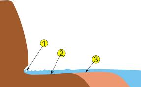
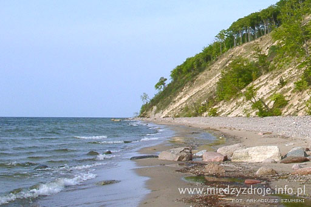
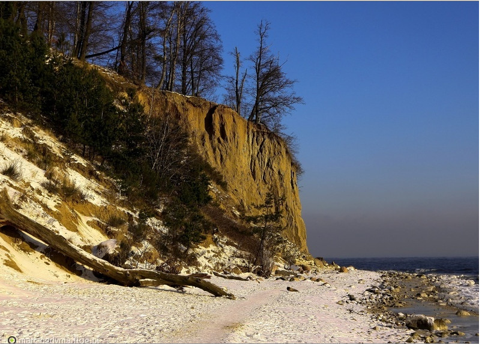

Klif
Zawartość strony
- Termin
- Podział klifów
- Klif żywy
- Zdjęcia
- Źródła
Termin
Klif, faleza, urwisko brzegowe, brzeg wysoki – stroma, często pionowa ściana brzegu morskiego lub jeziornego, utworzona wskutek podmywania brzegu przez fale (procesu abrazji) zachodzącego u jej podstawy na styku z platformą abrazyjną.
Podział klifów
Ze względu na aktualność procesu abrazji wyróżnia się:
- klif żywy (klif czynny, klif aktywny) – położony w strefie oddziaływania fal i przez nie niszczony; tworzy ostro zarysowaną, często pionową krawędź z wyraźną niszą abrazyjną (podciosem brzegowym) u podstawy; w miarę pogłębiania się podciosu ma miejsce obrywanie się i cofanie brzegu;
- klif martwy – położony poza strefą oddziaływania fal, a więc nie podlegający już procesowi abrazji; zwykle pokryty grubą warstwą osadów stokowych;
- klif odmłodzony – klif martwy ponownie jednak podcinany przez fale wskutek obniżenia się wybrzeża, podniesienia poziomu wody, lub okresowo w czasie bardzo silnych sztormów.
Ze względu na ułożenie warstw skalnych wyróżnia się:
- klif strukturalny – utworzony w warstwach nachylonych w stronę lądu;
- klif ześlizgowy – utworzony w warstwach nachylonych w stronę morza lub jeziora; oprócz procesu abrazji modeluje go również osuwanie i ześlizgiwanie się materiału skalnego.
Klif żywy

Zdjęcia


Źródła